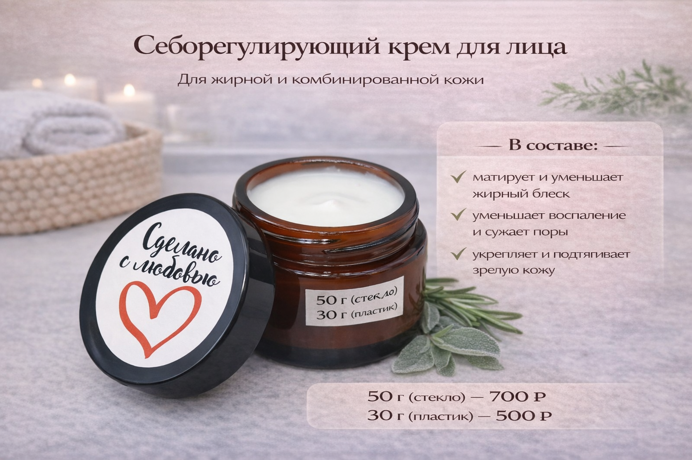

Описание
Что делает формула
Себорегулирующий крем собран без идеи «сжечь жирную кожу до сухости». Он матирует, уменьшает жирный блеск, помогает коже выглядеть спокойнее и при этом не забывает про восстановление и поддержку зрелой кожи.


Формула одновременно работает на снижение выработки себума и на поддержку кожного каркаса, что особенно важно для зрелой комбинированной кожи.
Себорегулирующий крем собран без идеи «сжечь жирную кожу до сухости». Он матирует, уменьшает жирный блеск, помогает коже выглядеть спокойнее и при этом не забывает про восстановление и поддержку зрелой кожи.
Наносите на очищенную кожу лица утром и/или вечером. Хорошо подходит жирной и комбинированной коже, когда хочется лёгкой текстуры без перегруза и без жирной плёнки.
Масло арганы, органическая сера, экстракт пальмы-сабаль, витамин F, концентрированный сок алоэ-вера, Д-пантенол, бисаболол, аллантоин, витамины Е и В3, экстракты розмарина и шалфея.
Снижают воспаление и выработку кожного сала, а также помогают поддерживать более плотный кожный каркас.
Увлажняют, успокаивают и помогают коже не чувствовать пересушивание после матирующих средств.
Поддерживают более чистый рельеф, уменьшают риск закупорки пор и улучшают общий тон кожи.
Серия собрана для сценария, когда кожа даёт лишний блеск, кажется тяжёлой и при этом плохо переносит агрессивное матирование. Здесь акцент на балансе, лёгких текстурах и более спокойном внешнем виде в течение дня.